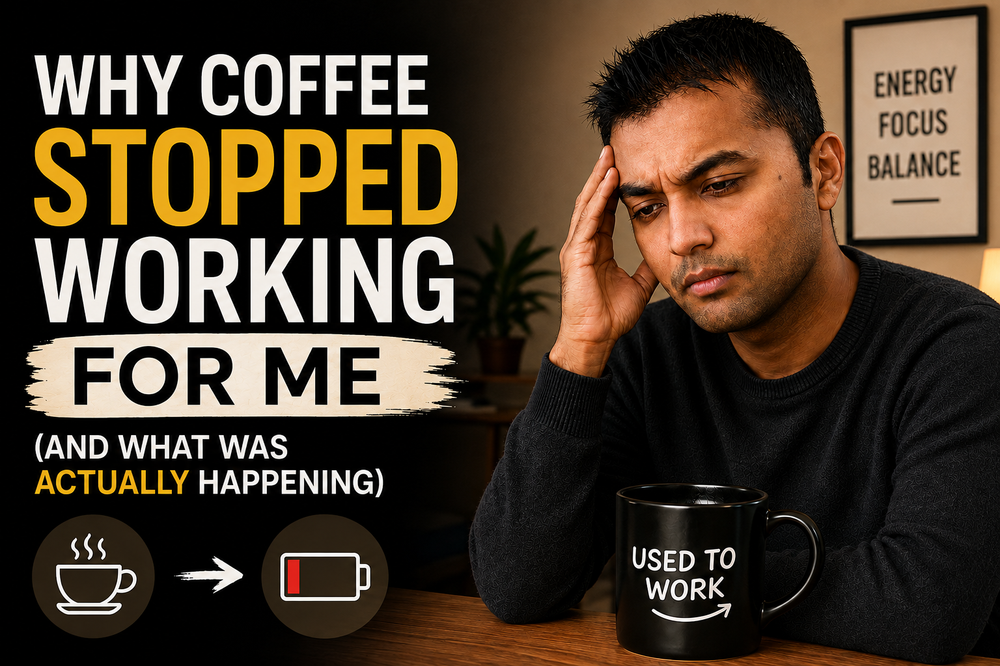
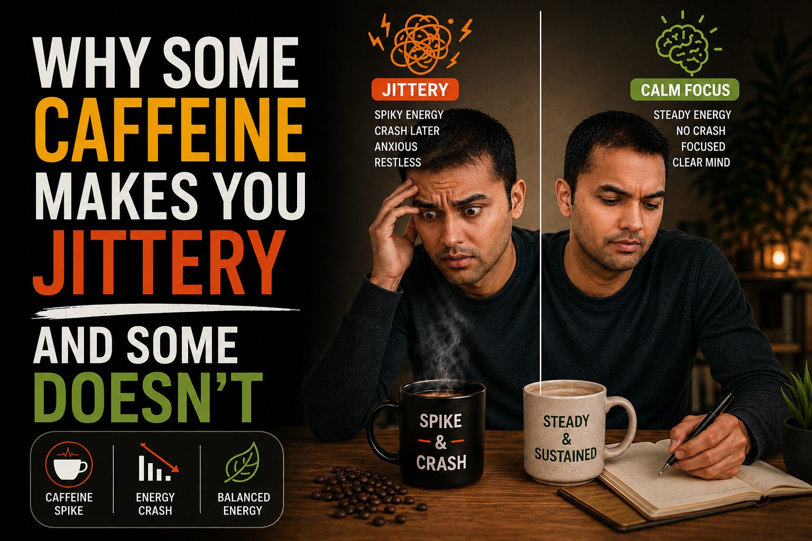
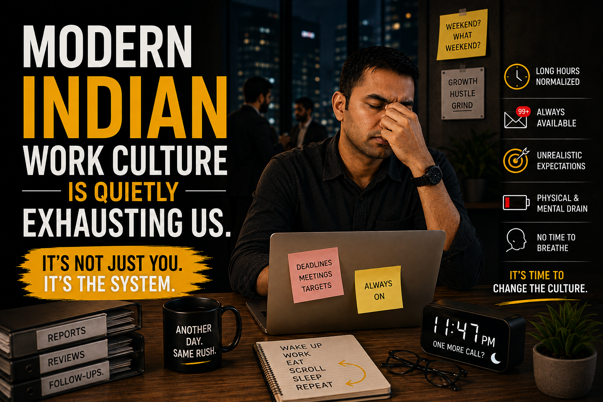
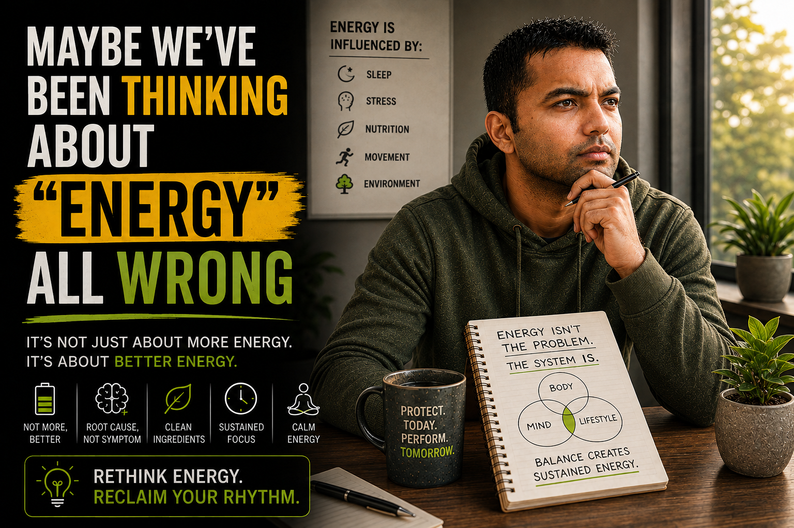
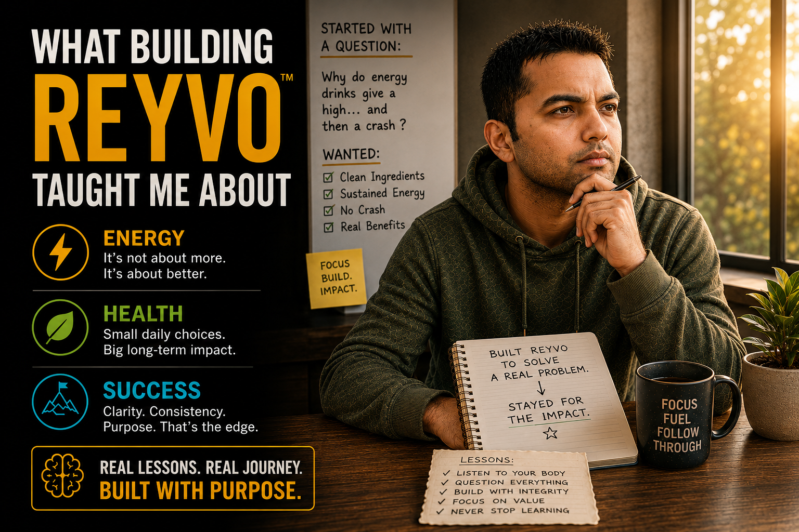

01 · REYVO JournalWhy Coffee Stopped Working For Me (And What Was Actually Happening)Vishwesh W.15 Jul 20266 min read
02 · REYVO JournalWhat Brain Fog Actually Feels Like (And Why I Stopped Ignoring Mine)Vishwesh W.12 Jul 20265 min read
03 · REYVO JournalThe 3 PM Slump Is Real Here's Why It's Not About DisciplineVishwesh W.9 Jul 20265 min read
04 · REYVO JournalWhy Some Caffeine Makes You Jittery And Some Doesn'tVishwesh W.6 Jul 20267 min read
05 · REYVO JournalDoes Coffee Actually Dehydrate You? What I Found Out Surprised MeVishwesh W.3 Jul 20266 min read
06 · REYVO JournalModern Indian Work Culture Is Quietly Exhausting UsVishwesh W.30 Jun 20268 min read
08 · REYVO JournalWhy I Didn't Want to Build Just Another Energy DrinkVishwesh W.24 Jun 20267 min read
09 · REYVO JournalMaybe We've Been Thinking About “Energy” All WrongVishwesh W.21 Jun 20266 min read
10 · REYVO JournalWhat Building REYVO Taught Me About Energy, Health, and SuccessVishwesh W.18 Jun 20269 min read